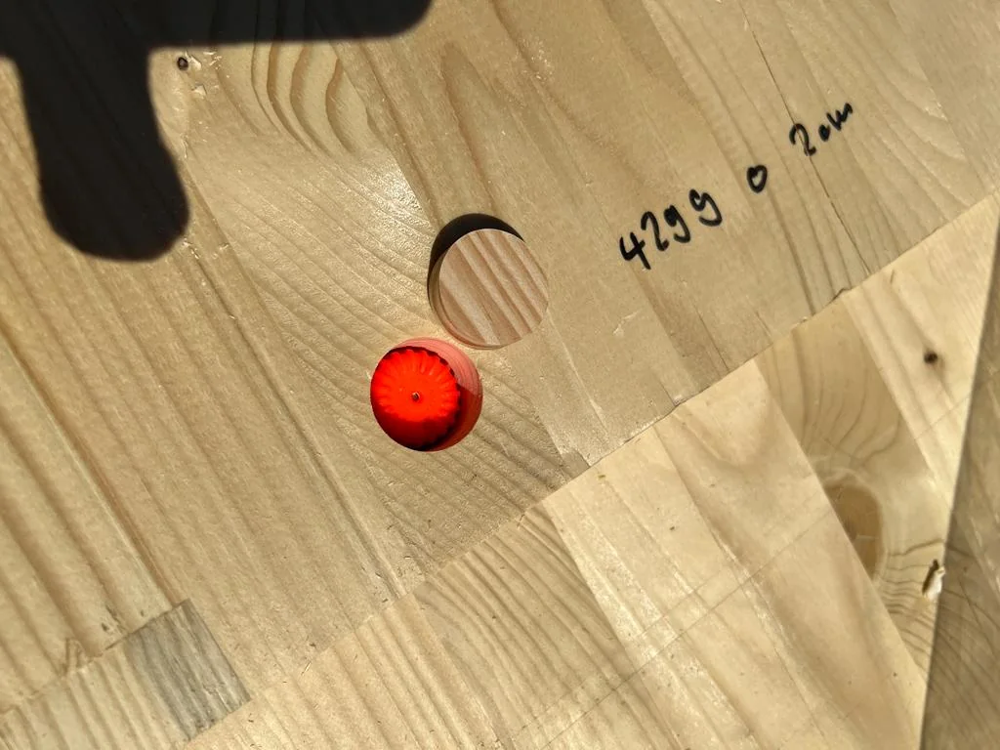
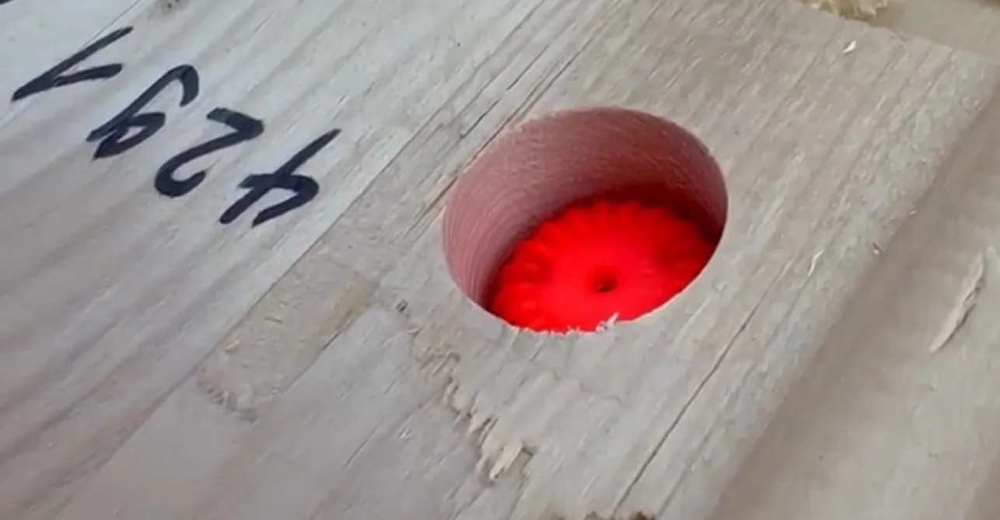
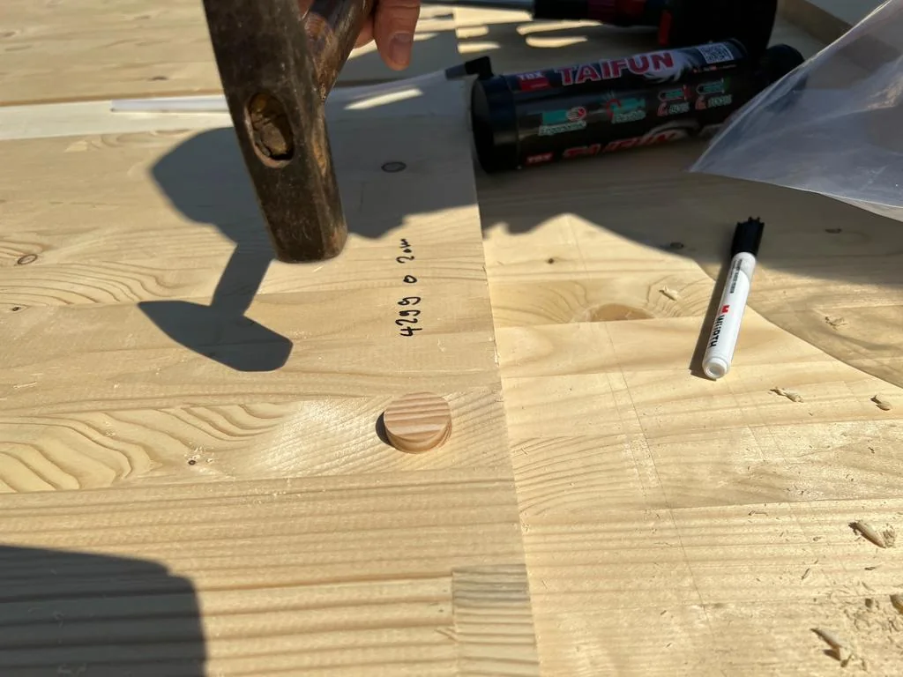
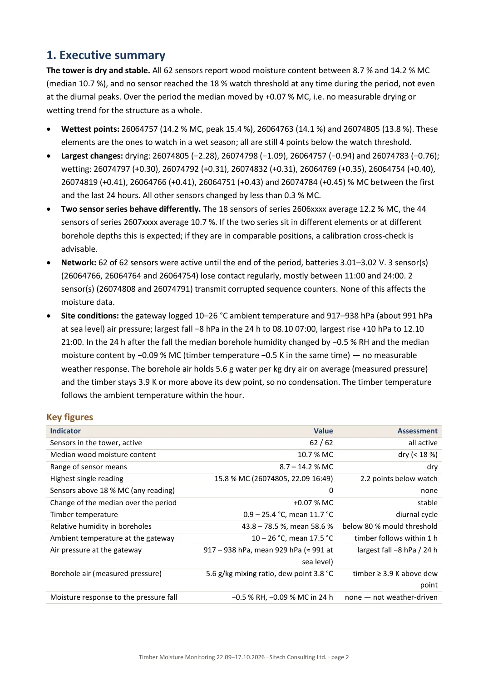
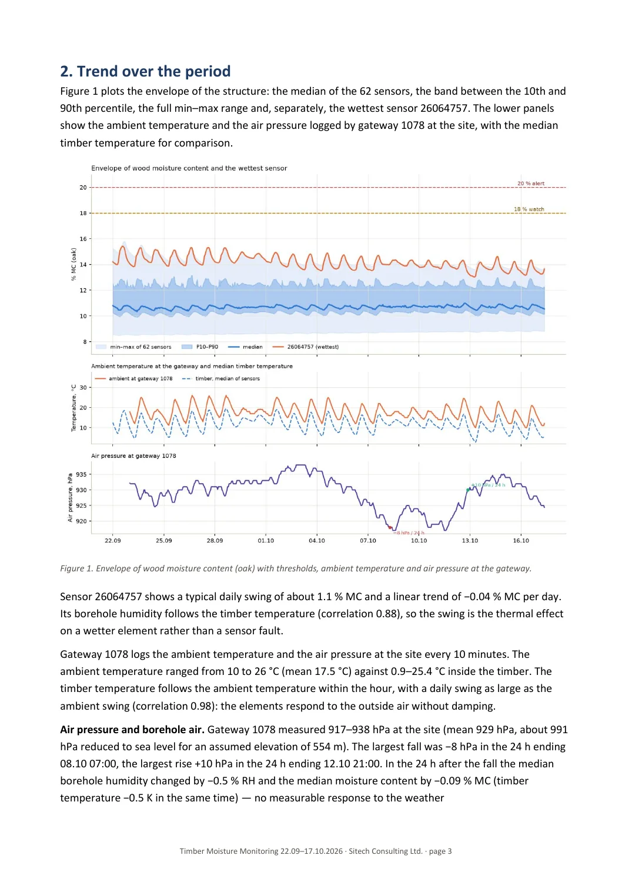
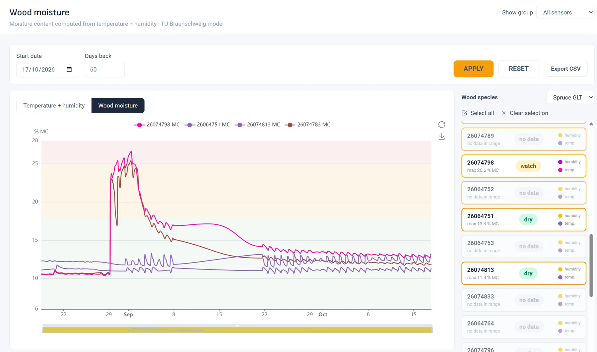
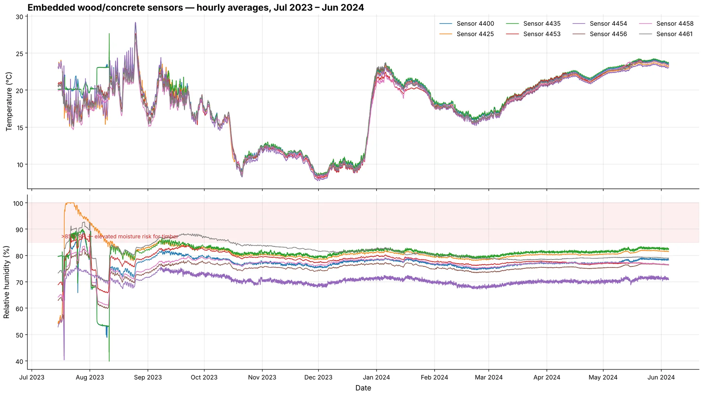

Timber structures and wood products
Wood moisture, measured inside the member.
Decay starts above 20 % wood moisture and is found years later. A Ø24 mm sensor in the member records temperature and humidity inside the timber; the platform converts them to moisture content for the species and warns while there is still time.



Why the record matters
Timber flat roofs, CLT buildings and glulam halls fail slowly and invisibly. By the time a stain appears, the element has often been above the decay threshold for seasons. Remediation runs into six figures; monitoring costs under 1 % of construction cost, and insurers already discount monitored roofs.
Eurocode 5 assigns every member a service class by its expected moisture. A continuous record shows whether the design assumption holds, documents the drying of a wetted element, and gives certifiers, insurers and owners the evidence they ask for over a 25-year design life.
How the measurement works
The sensor sits at the bottom of a 45 mm hole in the climate of the member rather than the room. From temperature and relative humidity in the borehole the platform computes the equilibrium moisture content with a species-specific sorption model (spruce, oak, glulam and others are selectable). The result is shown in per cent moisture content with a watch band at 18 % and an alert at 20 %, the level at which decay becomes active.
Because every packet carries its sequence number and signal strength, a weekly report can separate a real wetting from a sensor fault, a shaded position from a drifting device, and a weather front from a leak.
Reference: timber lattice tower, 62 sensors
A timber-hybrid wind-turbine tower prototype. The task was climate and wood-moisture evidence per member for type certification, insurers and turbine manufacturers over a 25-year design life.
- 62
- sensors reporting every 10 minutes, 74 positions instrumented
- 210,848
- readings in the first 25 days; 93 % completeness in the first week
- 10.7 % MC
- median wood moisture; all 62 sensors between 8.7 and 14.2 %
- 0
- sensors above the 18 % watch threshold at any time
What was delivered
SNTH sensors in Ø24 mm holes in the open diagonals, reference members and the shaft; a solar 4G gateway on a mast beside the tower; the dashboard with alarm thresholds per group; and a weekly analysis report per position covering trends, extremes, offsets, outages, link quality and wood moisture.
What the data showed
Sun-exposed members ran up to 13 K warmer than shaded ones at midday, with a daily amplitude of 17–18 K against 5–6 K for shaded members. Eight sheltered positions showed a constant humidity offset of 8–17 %, a position effect rather than sensor drift. A pressure fall of 8 hPa in 24 hours left no trace in the borehole humidity, so any future rise points to a local cause rather than the weather.



In the platform
The wood moisture view shows every sensor in per cent moisture content for the selected species, with the watch and alert bands behind the curves. Sensors are grouped by element, and the species can be changed per group. Alarms on moisture content, temperature, battery and missing data go out by SMS, e-mail or push; the whole history exports to CSV.
Where timber monitoring is used
- Flat roofs and roof cavities in timber construction
- CLT and glulam buildings, halls and bridges
- Towers and masts in timber-hybrid construction
- Timber producers: storage, drying and delivery documentation
- Wooden flooring over screed: readiness before laying
- Drying and restoration after water damage
A year inside the material
Embedded sensors run for years without attention. The chart shows hourly averages of eight sensors embedded in wood and concrete elements from July 2023 to June 2024: a shared seasonal temperature curve and humidity levels that differ by position but hold steady over the year. The shaded band marks relative humidity above 85 %, where moisture risk for timber rises.

Send a drawing, get a coverage plan.
From 25 sensors the coverage plan is free: sensor positions and gateway location on your drawing, expected signal strength per position, and a final quotation within three working days. The Structure 25 package (solar gateway and 25 sensors) costs excl. VAT.
- Phone
- +359 888 920 108
- info@sitech.consulting
- Office
- 66B Manastirski Livadi Street, 1404 Sofia, Bulgaria